| This panel displays the currently selected system in the Galaxy panel. You can explore the different objects in the solar system by left-clicking on them and seeing their report in the Ship List panel. | ||
| This is a planet. Planets can be colonized by your empire. There are many different types of planets with different atmospheres. | ||
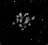 |
This is an asteroid field. It cannot be colonized, but you can remotely mine it with special components. | |
| This is a star. It provides the energy for a solar system and anchors the planets together. | ||
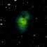 |
This is a space storm. Ships that travel through it can be effected in various ways such as being damaged, hidden from view, etc. | |
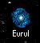 |
This is a warp point. Ships "warping" through a warp point will appear instantaneously at the other side of the warp point. These provide the main means of inter-system travel. If you have traveled through the warp point, then the name of the system it connects to will be displayed below it. | |
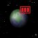 |
This is a planet which has a colony on it. The bars at the top right represent how much population is present on the planet. The color of the bars indicate which empire owns the colony. | |
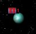 |
This is an empire flag which indicates that there is one ship from this empire present in orbit around this planet. | |
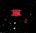 |
This is a ship moving through space. The small number 2 in the bottom right indicates that there are two ships present at this location. This is how ships are displayed if all of the ships at this location are owned by the same empire. If the ships were owned by two different empires, then you would see empire flags displayed like in the previous entry above. | |
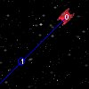 |
If you turn on the option to display movement lines, then this is what they will look like. When you select and move your ship, a line will be displayed to indicate where it is going and how long it will take. Each small circle on the line represents 1 movement point that must be expended, and the number displayed is how many turns from now it will take to get there. In this picture, the ship has zero movement point remaining. So the number on the ship is zero (no time needed to get to where it already is) and the next number down the line is a 1. The 1 indicates that the ship will not reach this point for 1 turn. |
|
| Some systems have no planets, and instead are filled with a nebulae or black hole. Nebulae and Black Holes have different effects on your ships. To get an individual report about the system itself, you should just left-click on nothing in particular within the system. | ||
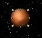 |
This indicates a planet that is selected. The small yellow arrows are shown to indicate what location you have selected within the system panel. This will help you to know where the ships displayed in the Ship List are actually located. | |
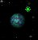 |
Small red or green stars are displayed on planets to help you in your colonization efforts. If no star is displayed, then you cannot colonize that planet. If a green star is displayed, then you can colonize the planet, and your people can breathe the atmosphere. | |
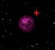 |
A red star indicates that you can colonize the planet, but your people cannot breathe the atmosphere. If you colonize this planet, then your colony will be "Domed" which means it will be restricted in its maximum population. | |
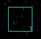 |
This indicates a waypoint at this location. Waypoints are created by you as locations for your ships to travel to. This picture shows way point 1 at this location in space. Use the Hotkeys or the Waypoints window to establish new way points. | |
| Left-click | If you left-click on a location with only one object, then the Ship List panel, will display an individual report about that object. If you left-click on a location with multiple objects, then the Ship List panel will display a list of those items. If you left-click on a location with no objects, then the Ship List panel will display an individual report about this entire solar system. | |
| Right-click | Same as left-click. |
| None |
| None |